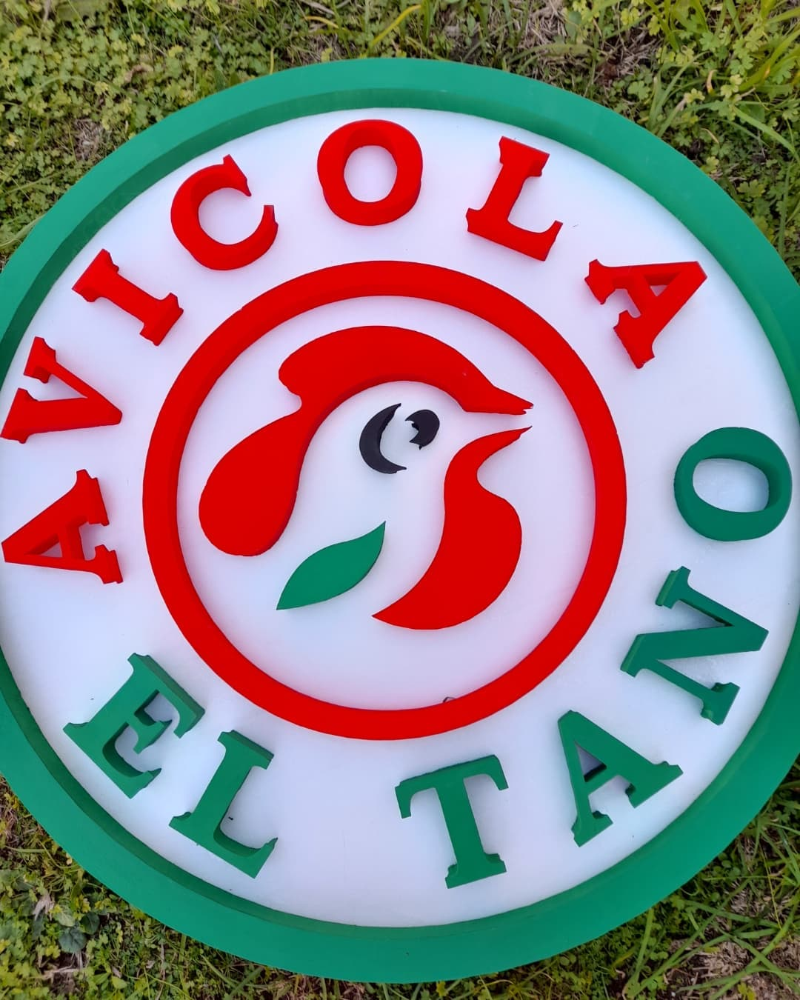

Corte Laser
El Corte y Grabado láser le asegura máxima precisión. Por este motivo es recomendado tanto en la realización de piezas personalizadas como en cantidades industriales, que le brindara la exactitud que su producto requiere.
Definamos “el Material” El corte se basa en la capacidad de la máquina de perforar, trazar, o calar acrilicos maderas cartones y más...
Definamos “el Corte” en este caso se traza por el contorno de dicho diseño transformando los rellenos en contornos.
Que Calamos? Casi todo un ejemplo es la papelería, acrílicos, MDF, materiales bi-capa y mucho más.